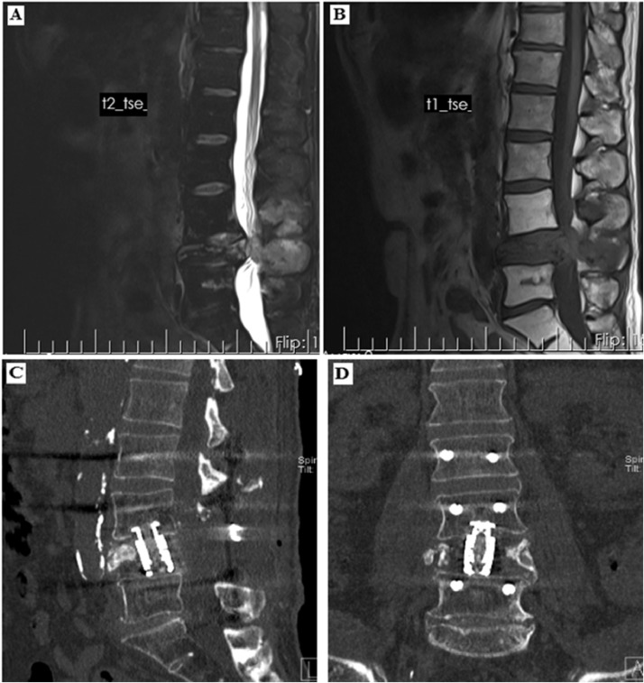
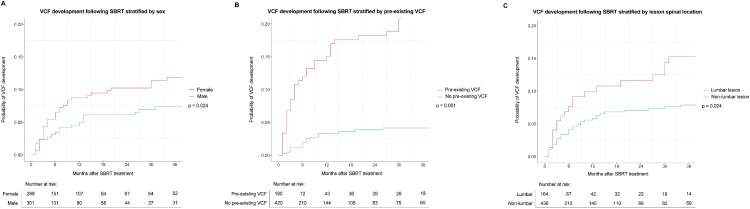

307 — Gãy xẹp đốt sống sau SBRT: dự đoán, phân biệt với tái phát & khi nào bơm xi măng / Post-SBRT vertebral compression fracture: prediction, differentiation from local progression, and when to augment
Tags: pattern:gay-xep-dot-song pattern:di-can-xuong pattern:gia-tien-trien pattern:gia-lanh-hoa pattern:phu-tuy vung:cot-song vung:xuong score:SINS score:Genant score:SPINO score:Bilsky protocol:CT-xuong protocol:MRI-cot-song protocol:SBRT protocol:vertebroplasty incidentaloma:di-can-xuong
Mức chắc chắn (certainty): tổng hợp y văn (literature synthesis) — đoàn hệ lớn nhất 600 lần SBRT/779 đốt sống (Taori S et al., Adv Radiat Oncol 2026, PMC13140028), mô hình tiên lượng có nomogram 173 bệnh nhân (Dibs K et al., Radiat Oncol 2025, PMC12076872), phân tích SINS trên 391 tổn thương (Doyle P et al., Adv Radiat Oncol 2025, PMC12180991) và các đoàn hệ độc lập 779 đốt (Ito K et al., J Clin Med 2023, PMC10253802). Số liệu là của các nghiên cứu được trích, không phải ca nguyên văn của nhóm.
Câu chốt của bài: sau SBRT cột sống, 1 năm 11% và 3 năm 21% đốt sống bị xẹp thêm, nhưng chỉ 2,4% toàn bộ đốt được xạ là xẹp CÓ ĐAU và 1,0% phải mổ — nghĩa là đa số gãy xẹp là im lặng, không điều trị theo phim. Việc phải làm là phân biệt xẹp do xạ với tiến triển u (không có mô mềm mới, có đường gãy, không có bệnh màng cứng mới) và phân tầng nguy cơ TRƯỚC xạ để chọn phân liều, theo dõi sát, hoặc gia cố xương sớm.
1. Tổng quan bệnh học – cơ chế hình ảnh
- Vì sao thân đốt dễ xẹp: thân đốt là vỏ xương mỏng (cortical shell ~1 mm) bọc lõi xốp (trabecular core) chịu lực nén; khi u tiêu xương làm mất các bè xương chịu lực, vỏ trước và mâm sụn (endplate) là nơi chịu ứng suất lớn nhất → sụp mâm (endplate fracture) rồi lún thân đốt.
- Vì sao xạ làm xương yếu thêm (TẠI SAO, không chỉ "do xạ"): liều cao mỗi phân liều giết tế bào xương (osteocyte) trong xương đã trưởng thành — các tế bào này là "cảm biến cơ học" điều phối tạo xương/hủy xương; đồng thời tổn thương nội mô mạch máu gây hoại tử xương do thiếu máu (avascular osteonecrosis) và làm chậm tái tạo. Kết quả: BED3 ≥ 104 Gy (liều sinh học tương đương với α/β = 3 của xương) là yếu tố nguy cơ độc lập duy nhất trong một đoàn hệ 217 tổn thương; ví dụ 20 Gy × 1 = BED3 153 Gy, 18 Gy × 1 = 126 Gy, trong khi 24 Gy/3 phân liều = 88 Gy — giải thích vì sao một phân liều duy nhất có nguy cơ xẹp cao hơn dù cùng kiểm soát u.
- Vì sao đọc CT trước, MRI sau: CT dựng hình sagittal ≤ 1 mm thấy đường gãy vỏ, sụp mâm, mất chiều cao, mảnh xương bật ra sau (retropulsion) — những thứ MRI dễ bỏ qua. MRI T1W/T2W/STIR thấy phù tủy (marrow edema) và mô mềm/epidural, nhưng phù tủy sau xạ tồn tại 6–12 tháng nên không đủ để gọi tiến triển.
- Vì sao xẹp do xạ bắt chước tiến triển: cả hai đều làm mất chiều cao + T2 tăng + đau mới. Khác biệt nằm ở hình thái: xẹp do xạ có đường gãy ngang, mảnh vỏ trước, có thể "khe dịch" (fluid sign) nhưng không có khối mô mềm ngoài xương, không phá vỏ lan rộng, không bệnh màng cứng mới; tiến triển có mô mềm mới, bờ tổn thương nở ra, xâm lấn ống sống.
- Ngưỡng định lượng cốt lõi:
- Tần suất: 10% (57/600 lần xạ; 5% xẹp mới + 5% xẹp thêm), trung vị 6 tháng (1–83 tháng); tích lũy 11% (1 năm) và 21% (3 năm) (Taori 2026). Đoàn hệ khác: 7,7% (60/779 đốt), 2,4% đau, 1,0% phải mổ (Ito 2023); 17% trong 173 bệnh nhân, trung vị 4,8 tháng (Dibs 2025); 10%, trung vị 2,4 tháng (Issany 2024).
- Phân độ Genant: độ 1 = mất chiều cao 0–25%; độ 2 = 26–40%; độ 3 = > 40% (Ozdemir 2019).
- Nguy cơ theo yếu tố: sụp mâm (endplate disruption) HR 4,16; corticoid ≥ 4 tuần HR 3,60; SINS ≥ 7 HR 3,63; mô học xấu (RCC, melanoma, sarcoma…) HR 2,98 → nomogram chia nhóm nguy cơ 1 năm 2% / 21% / 58% (Dibs 2025). Vị trí L2–L4 HR 2,78, tổn thương hỗn hợp HR 3,87, tiêu xương HR 2,68 (Doyle 2025). Nữ OR 1,06, thắt lưng OR 1,05, xẹp có sẵn OR 1,01 (Taori 2026).
- Yếu tố bảo vệ: bisphosphonate > 6 tháng (p = 0,002; FFS 87,8% lúc 6 tháng → 23,5% lúc 48 tháng); 11 đốt được kyphoplasty TRƯỚC SBRT: 0 ca xẹp sau đó (Issany 2024 — cỡ mẫu nhỏ, chỉ là tín hiệu).
2. Mẫu hình + chẩn đoán phân biệt theo bối cảnh (Gamut)
- Khuôn 1 — đốt đã xạ bị lún lần đầu: xẹp do xạ (de novo VCF) vs tiến triển u vs gãy loãng xương/do corticoid vs viêm đĩa–đốt (spondylodiscitis) (hiếm nhưng có sốt/CRP).
- Khuôn 2 — đốt đã xẹp từ trước, nay xẹp thêm: xẹp tiến triển (progressive VCF) vs tiến triển u trong đốt đã xẹp vs gãy mới ở đốt lân cận (đốt ngoài trường xạ) vs sụp do xi măng cũ di trú.
- Khuôn 3 — đau mới sau xạ: xẹp cấp (phù tủy, đau cơ học) vs tiến triển màng cứng (yếu chi, Bilsky tăng) vs bệnh tủy do xạ (radiation myelopathy) (dải T2 trong tủy, không khối) vs đau cơ–khớp cơ học.
- Khuôn 4 — sau bơm xi măng: đau do cement rò/thoát ra đĩa vs gãy đốt kế cận (adjacent-level fracture) vs tái phát quanh cement (CT bị artifact, cần MRI) vs nhiễm cement.
- Mnemonic "FRACTURE": Female (nữ) — Radiation BED3 ≥ 104 Gy — Alignment/deformity (biến dạng mới) — Cortical/endplate disruption (sụp mâm) — Tumor lytic/mixed (tiêu/hỗn hợp) — Use steroids ≥ 4 tuần — Reduction pre-existing (đã xẹp sẵn) — Extent (SINS ≥ 7).
3. Bảng so sánh phân biệt (ma trận đối chiếu)
| Thực thể (entity) | Hình ảnh điển hình (CT/MRI) | Chốt vào (rule-in) | Chốt loại (rule-out) | Gợi ý xác nhận |
|---|---|---|---|---|
| Xẹp do xạ — mới (de novo VCF) | Mất chiều cao thân đốt mới, đường gãy vỏ trước/ngang, sụp mâm, phù tủy STIR; không khối mô mềm | Mất chiều cao mới ≥ 1 độ Genant + đường gãy + không mô mềm mới | Mô mềm ngoài xương / bệnh màng cứng mới → nghĩ tiến triển | CT sagittal ≤ 1 mm + MRI T1/T2/STIR cùng ngày; so phim trước xạ |
| Xẹp tiến triển (progressive VCF) | Đốt đã xẹp sẵn, nay mất thêm chiều cao, có thể mới có phù tủy; bờ vỏ vẫn liên tục | Giảm ≥ 1 độ Genant so với baseline + không có tổn thương mô mềm mới | Nở bờ sau + xâm lấn ống sống → tiến triển | Đo chiều cao 3 điểm (trước/giữa/sau) trên cùng chuỗi |
| Tiến triển tại chỗ | Tăng thể tích, mô mềm mới, phá vỏ lan, bệnh màng cứng mới/tiến triển, xâm lấn ống sống | Mô mềm mới hoặc bệnh màng cứng mới + tăng kích thước | Chỉ mất chiều cao đơn thuần, không mô mềm | MRI T1+C + T2; SPINO; PET/CT nếu còn nghi |
| Gãy loãng xương / do corticoid | Xẹp đốt ngoài trường xạ hoặc trong trường nhưng không có u; vỏ mỏng, bè xương thưa, không phá vỏ | Không có u tại đốt + mật độ xương thấp + dùng corticoid | Phá cuống/bờ sau lồi + khối cạnh sống → u | DXA; so phim; MRI không thấy tổn thương thay thế tủy |
| Viêm đĩa–đốt sống | Hẹp đĩa, phù 2 đốt kề, ngấm viền, áp-xe mô mềm/epidural, khí trong đĩa | Hẹp đĩa + phù 2 đốt kề + ngấm viền + sốt/CRP tăng | Chỉ một đốt, đĩa bình thường, không ngấm viền → không phải viêm | CRP/ESR, cấy (sinh thiết nếu cần), MRI cản quang |
| Sau bơm xi măng | Cement đậm đặc trong thân đốt, có thể rò ra đĩa/tĩnh mạch; artifact CT | Cement trong thân đốt đúng vị trí + hết đau cơ học | Cement rò vào ống sống/chèn ép → biến chứng | CT + X-quang; MRI khi nghi tái phát (artifact) |

Nam, ung thư tuyến tiền liệt, SBRT 18 Gy × 1 L3: (A) T2W và (B) T1W sagittal 16 tháng sau xạ — L3 xẹp nặng, mảnh xương bật ra sau chèn ống sống, không có khối mô mềm; (C, D) CT sau giải ép + cố định — đây là xẹp do xạ độ 3 Genant, không phải tiến triển u. Nguồn: Ozdemir Y et al., J Bone Oncol 2019 (PMC6378905), CC BY-NC-ND; ảnh nguyên bản, không cắt/ghép.4. Protocol chụp + hệ phân độ/điểm chuẩn hóa
- Trước SBRT (baseline — bắt buộc):
- CT cột sống dựng hình ≤ 1 mm (bone + soft tissue) tại đốt đích và đốt kề: đo chiều cao 3 điểm, ghi Genant, tìm sụp mâm, phá vỏ, thành phần tiêu/hỗn hợp/đặc.
- MRI cột sống: T1W sagittal, T2W sagittal, STIR/T2 fat-sat, ± T1W sau tiêm; ghi Bilsky nếu có bệnh màng cứng, SINS.
- SINS (Spinal Instability Neoplastic Score, Fisher 2010, 0–18): vị trí chuyển tiếp 3 / di động 2 / bán cứng 1 / cứng 0; đau cơ học 3 / thỉnh thoảng 1 / không 0; tổn thương tiêu 2 / hỗn hợp 1 / đặc 0; can thiệp trục trượt 4 / biến dạng mới 2 / bình thường 0; sụp thân đốt > 50% 3 / < 50% 2 / không 0; xâm lấn sau–bên hai bên 3 / một bên 1 / không 0. 0–6 ổn định · 7–12 chưa xác định · 13–18 không vững.
- Chọn phân liều theo nguy cơ (risk-adapted): với đốt nguy cơ cao (sụp mâm, tiêu xương, xẹp có sẵn, SINS ≥ 7, corticoid), cân nhắc đa phân liều thay vì một phân liều lớn — nhưng phải cân bằng với kiểm soát u (BED3 cao cũng là yếu tố kiểm soát tại chỗ). Đây là quyết định của hội đồng u–xạ–phẫu thuật, không phải "hạ liều cho an toàn" máy móc.
- Theo dõi sau SBRT:
- MRI + CT lần 1 lúc 3 tháng, sau đó mỗi 2–3 tháng đến 12–18 tháng, rồi mỗi 3–6 tháng (xem bài 306); cùng chuỗi xung, cùng từ thế, cùng máy.
- Đo chiều cao và Genant ở MỌI lần chụp, kể cả khi bệnh nhân không đau — vì đa số xẹp không đau.
- Không chụp PET/CT trong 3 tháng đầu để tránh viêm do xạ; PET chỉ khi MRI không kết luận.
- Khi nào gia cố xương (cement augmentation):
- Đau cơ học khu trú đúng đốt xẹp + phù tủy/đường gãy cấp → vertebroplasty/kyphoplasty giảm đau, ổn định.
- Nguy cơ cao trước xẹp (nomogram 58%, sụp mâm, tiêu xương, SINS 7–12): có thể kyphoplasty dự phòng/trước SBRT — dữ liệu hiện hồi cứu, cỡ mẫu nhỏ (11 đốt: 0 xẹp), không phải khuyến cáo mức cao; cần thảo luận nguy cơ rò cement (xem bài 3019).
- Không bơm xi măng chỉ vì "xẹp trên phim" khi không đau.
- Khi nào mổ: SINS ≥ 13, biến dạng/trượt mới, yếu liệt do chèn ép, hoặc xẹp > 50% kèm đau không kiểm soát → giải ép ± cố định; nếu đã có tiến triển u thì cân nhắc separation surgery + SBRT.
- Sơ đồ quyết định:
flowchart TD
A[Đốt đã SBRT: MRI + CT theo lịch] --> B{Mất chiều cao mới hoặc tăng ≥ 1 độ Genant?}
B -->|Không| C[Theo dõi tiếp 2-3 tháng]
B -->|Có| D{Có mô mềm mới hoặc bệnh màng cứng mới?}
D -->|Có| E[Tiến triển tại chỗ: xạ lại, mổ, đổi hệ thống]
D -->|Không| F{Đau cơ học đúng đốt + phù tủy/đường gãy cấp?}
F -->|Không| G[Xẹp im lặng: theo dõi, bisphosphonate, DXA]
F -->|Có| H{SINS ≥ 13 hoặc yếu liệt hoặc biến dạng?}
H -->|Có| I[Giải ép + cố định]
H -->|Không| J[Kyphoplasty/vertebroplasty giảm đau]
5. Biến thể bình thường và cạm bẫy
- Cạm bẫy 1 — điều trị con số thay vì bệnh nhân: 60 VCF/779 đốt (7,7%) nhưng chỉ 19 ca đau (2,4%) và 8 ca phải mổ (1,0%) — bơm xi măng hàng loạt cho xẹp im lặng là can thiệp không có chỉ định.
- Cạm bẫy 2 — gọi tiến triển khi chỉ có phù tủy: phù tủy sau xạ kéo dài 6–12 tháng; T2 sáng đơn thuần không phải tiến triển. Chốt tiến triển bằng mô mềm mới/bệnh màng cứng mới/tăng thể tích (bài 306).
- Cạm bẫy 3 — "khe dịch"/khe khí: fluid sign và khe khí trong thân đốt (Kümmell) là dấu hiệu hoại tử/thiếu máu lành tính, không phải u; nhưng khe khí + bờ xương bào mòn + CRP cao phải loại trừ nhiễm trùng.
- Cạm bẫy 4 — đo chiều cao không chuẩn: đo trên lát khác nhau, nghiêng khác nhau tạo "xẹp giả"; luôn đo 3 điểm (trước/giữa/sau) trên cùng lát cắt sagittal, cùng cửa sổ, và so đốt kề.
- Cạm bẫy 5 — đốt đã xẹp từ trước: nếu baseline đã xẹp, không được gọi "xẹp mới" khi chỉ giảm vài mm; phải phân de novo vs progressive và dùng ngưỡng ≥ 1 độ Genant.
- Cạm bẫy 6 — artifact cement che tái phát: CT sau bơm xi măng bị artifact cứng; tái phát quanh cement phải đọc MRI T1+C/T2 và PET nếu nghi, không kết luận từ CT.
- Cạm bẫy 7 — bỏ sót tiến triển SAU xẹp: thân đốt xẹp có thể che khối mô mềm sau–bên; luôn xem axial T1+C và ống sống, đặc biệt khi có yếu chi mới.
6. Tự lượng giá — Blind Quiz
Ca 1 — Nam 68 tuổi, ung thư tuyến tiền liệt, đau lưng tăng dần 2 tuần, 16 tháng sau SBRT 18 Gy × 1 tại L3. Xem T2W/T1W sagittal (A, B).
- Gợi ý lâm sàng: đau cơ học khi đứng/ngồi, không sốt; không yếu chi lúc khám.
- Câu hỏi: (1) Mô tả bất thường chính và phân độ Genant? (2) Ba chẩn đoán phân biệt? (3) Dấu hiệu nào loại trừ tiến triển u? (4) Xử trí?
Bấm để hiện đáp án (findings + chẩn đoán)
- Dấu hiệu: L3 mất chiều cao > 40% (Genant độ 3), mảnh vỏ sau bật vào ống sống (retropulsion), tín hiệu tủy thay đổi; không có khối mô mềm cạnh sống, không phá cuống, đĩa L2–L3 và L3–L4 còn chiều cao.
- Chẩn đoán: xẹp đốt sống do xạ (radiation-associated VCF), không phải tiến triển u — vì không có mô mềm mới và không có bệnh màng cứng mới, chỉ có đường gãy/mất chiều cao.
- Xử trí: đau + chèn ép → giải ép + cố định (C, D); nếu không có chèn ép thần kinh và đau kiểm soát được thì kyphoplasty là lựa chọn; không xạ lại vì không có tiến triển.
- Phản biện: tổn thương độ 3 + retropulsion là ca nặng; đa số VCF sau SBRT không đau (2,4%), nên ca này không đại diện cho toàn bộ phổ.
- Nguồn ảnh: Ozdemir Y et al., J Bone Oncol 2019 (PMC6378905), Fig. 4, CC BY-NC-ND.
Ca 2 — Đọc biểu đồ tích lũy: 779 đốt sống sau SBRT, phân tầng theo giới, xẹp có sẵn và vị trí.

- Câu hỏi: Nhóm nào có nguy cơ xẹp cao hơn? Vì sao "xẹp có sẵn" lại là yếu tố nguy cơ mạnh nhất về mặt cơ học? Điều này đổi cách chụp baseline thế nào?
Bấm để hiện đáp án
- Nữ > nam (p = 0,024); có xẹp từ trước > không (p = 0,001); thắt lưng > ngực/khác (p = 0,024).
- Vì sao xẹp có sẵn nguy hiểm: thân đốt đã mất chiều cao nghĩa là mâm đã sụp và vỏ trước đã gãy — khả năng chịu nén giảm, nên chỉ cần thêm mất xương do u/xạ là sụp tiếp. Về mặt cơ học, đây là cấu trúc đã "hỏng một phần", không phải đốt nguyên vẹn.
- Đổi thực hành: baseline bắt buộc đo và ghi Genant từng đốt, không chỉ ghi "không có gãy"; nếu đã xẹp → theo dõi sát hơn, cân nhắc đa phân liều/gia cố sớm, và không dùng "xẹp" làm tiêu chí tiến triển ở lần chụp sau.
- Nguồn ảnh: Taori S et al., Adv Radiat Oncol 2026 (PMC13140028), Fig. 2, CC BY 4.0.
Bài liên quan chéo
- 306 – Theo dõi sau SBRT & separation surgery di căn xương RCC: lành hóa xương vs pseudoprogression — đọc MRI sau xạ, SPINO, shine-through.
- 3017 – Gãy nén đốt sống do loãng xương: STIR cấp vs mạn, chỉ định bơm xi măng — kỹ thuật và biến chứng cement.
- 3019 – Thuyên tắc phổi do xi măng sau bơm đốt sống — biến chứng của gia cố xương.
- 1615 – Di căn xương ở ung thư vú: đặc xương lành hóa vs tiến triển — ngưỡng đáp ứng xương.
- 300 – Tổng quan Hệ Cơ – Xương – Khớp
Ảnh
images/307_gay-xep-dot-song_MRI-CT_PMC6378905.jpg— Fig. 4, Ozdemir 2019, CC BY-NC-ND (nguyên bản).images/307_tich-luy-VCF_PMC13140028.jpg— Fig. 2, Taori 2026, CC BY 4.0.- Nguồn + giấy phép từng ảnh:
images/CREDITS.md.
Không dùng để chẩn đoán độc lập khi chưa có người hướng dẫn.